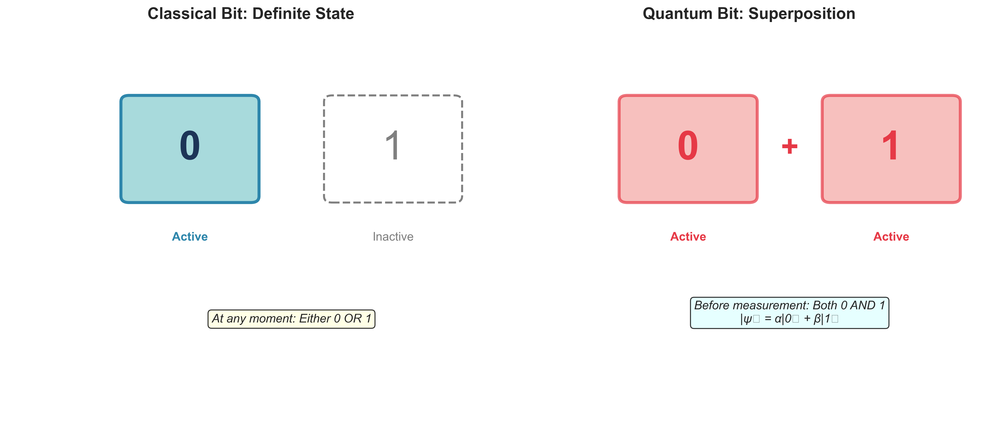
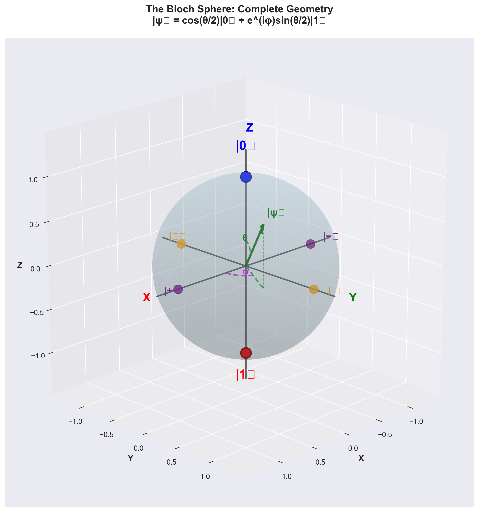
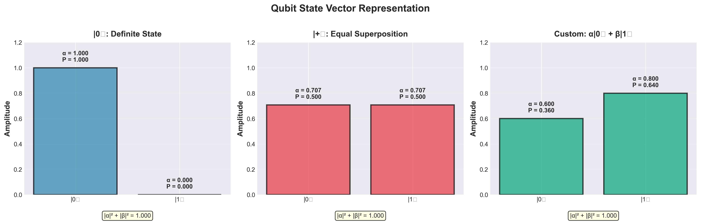
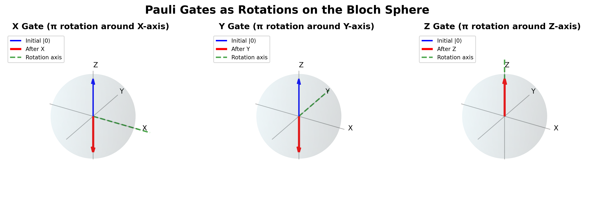
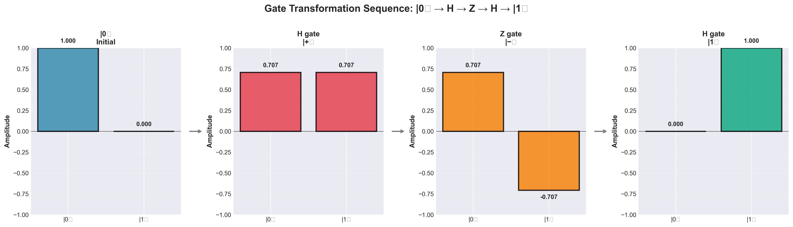
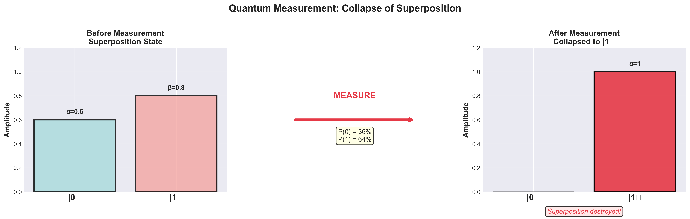

The Qubit¶
Time: 30 minutes | Difficulty: 🟡 Intermediate
Overview¶
The qubit (quantum bit) is to quantum computing what the bit is to classical computing - the fundamental unit of information. But unlike a classical bit that's either 0 or 1, a qubit leverages quantum superposition to exist in both states simultaneously.
This single difference unlocks exponential computational power for certain problems!
What you'll learn: - What a qubit really is - The Bloch sphere (beautiful geometric representation) - How qubits differ from classical bits - Physical implementations of qubits - Why qubits are powerful but fragile
From Bit to Qubit¶
Classical Bit: The Foundation¶
A classical bit has two possible states:
Bit ∈ {0, 1}
Examples:
- Transistor: High voltage (1) or low voltage (0)
- Magnetic: North (1) or South (0)
- Light: On (1) or Off (0)
Key property: Always in one definite state.
Quantum Bit: The Evolution¶
A qubit is a two-level quantum system that can be in superposition of two basis states.
Mathematical representation:
|ψ⟩ = α|0⟩ + β|1⟩
where:
- |0⟩ and |1⟩ are basis states (like 0 and 1 for classical bits)
- α and β are complex numbers (probability amplitudes)
- |α|² + |β|² = 1 (normalization: probabilities sum to 1)
Key property: Can be in both states simultaneously until measured!

Figure: Classical bits exist in one definite state (0 OR 1), while quantum bits can exist in superposition (0 AND 1 simultaneously). The classical bit shown is in state |0⟩, while the qubit is in superposition α|0⟩ + β|1⟩.
What Makes This Powerful?¶
Classical system with n bits: - Can be in one of 2ⁿ possible states at any time - To represent all possibilities, need 2ⁿ separate bits
Quantum system with n qubits: - Can be in superposition of all 2ⁿ states simultaneously! - Need only n qubits to represent exponentially many states
Example:
3 classical bits: Can store one of 8 values (000, 001, 010, ..., 111)
3 qubits: Can exist in all 8 values simultaneously!
|ψ⟩ = α₀|000⟩ + α₁|001⟩ + α₂|010⟩ + α₃|011⟩
+ α₄|100⟩ + α₅|101⟩ + α₆|110⟩ + α₇|111⟩
But there's a catch: Measurement only gives you one classical outcome!
The Bloch Sphere: Visualizing a Qubit¶
Why We Need Visualization¶
A qubit state |ψ⟩ = α|0⟩ + β|1⟩ involves: - Two complex numbers (α and β) - Complex numbers have real and imaginary parts - That's 4 real numbers total
But the normalization condition (|α|² + |β|² = 1) and global phase freedom reduce this to just 2 parameters!
This means we can visualize any qubit state as a point on a sphere!
The Bloch Sphere¶
Imagine a sphere of radius 1:
Key features:
- North Pole: |0⟩ state
- Pure state: α = 1, β = 0
-
Measurement gives 0 with 100% probability
-
South Pole: |1⟩ state
- Pure state: α = 0, β = 1
-
Measurement gives 1 with 100% probability
-
Equator: Equal superpositions
- |α|² = |β|² = ½
-
50% probability for each outcome
-
Any point on surface: Pure quantum state
- Defined by two angles: θ (theta) and φ (phi)

Figure: The Bloch sphere with complete geometric annotations. Any pure qubit state |ψ⟩ corresponds to a point on the sphere's surface, parameterized by angles θ (polar angle from north pole) and φ (azimuthal angle in the XY plane). The six cardinal states are marked: |0⟩ and |1⟩ at the poles, and |+⟩, |−⟩, |↻⟩, |↺⟩ on the equator.
Mathematical Form¶
Any point on the Bloch sphere can be written as:
|ψ⟩ = cos(θ/2)|0⟩ + e^(iφ) sin(θ/2)|1⟩
where:
- θ (theta): Angle from north pole (0 to π)
- φ (phi): Angle around equator (0 to 2π)
What these angles mean:
θ controls probability: - θ = 0: State is |0⟩ - θ = π: State is |1⟩ - θ = π/2: Equal superposition (50/50)
φ controls phase: - φ = 0: Real superposition - φ = π: Negative superposition - Other values: Complex superposition
Common Qubit States on Bloch Sphere¶
Computational Basis:
Superposition Basis (Hadamard basis):
|+⟩ = (|0⟩ + |1⟩)/√2: θ = π/2, φ = 0 (Front of equator)
|−⟩ = (|0⟩ − |1⟩)/√2: θ = π/2, φ = π (Back of equator)
Circular Basis:
|↻⟩ = (|0⟩ + i|1⟩)/√2: θ = π/2, φ = π/2 (Right side of equator)
|↺⟩ = (|0⟩ − i|1⟩)/√2: θ = π/2, φ = 3π/2 (Left side of equator)

Figure 1: The six most common qubit states visualized on the Bloch sphere. The computational basis states |0⟩ and |1⟩ are at the north and south poles, while superposition states |+⟩, |−⟩, |↻⟩, and |↺⟩ lie on the equator.
Why the Bloch Sphere is Useful¶
1. Geometric intuition - Quantum operations become rotations! - Easy to see relationships between states - Visualize measurement outcomes
2. Understanding gates - X gate: Rotation around X-axis by π - Y gate: Rotation around Y-axis by π - Z gate: Rotation around Z-axis by π - Hadamard: Rotation that swaps |0⟩ ↔ |+⟩
3. Measurement - Measurement projects onto an axis - Distance from pole = probability
Qubit States: A Deeper Look¶
Pure vs Mixed States¶
Pure state:
|ψ⟩ = α|0⟩ + β|1⟩
- Point on surface of Bloch sphere
- Maximum quantum information
- Can show interference
- What we use in quantum computing
Mixed state:
Classical probability distribution over pure states
- Point inside Bloch sphere
- Less quantum information
- No interference
- Results from decoherence or noise
Analogy: - Pure state: Coherent laser beam (all photons in phase) - Mixed state: Light bulb (photons with random phases)

Figure: Three examples of qubit states shown as amplitude bars. Left: Definite state |0⟩ has all amplitude in the |0⟩ component. Middle: Equal superposition |+⟩ has equal amplitudes in both components. Right: Custom superposition with different probability distributions. The normalization condition |α|² + |β|² = 1 is satisfied for all states.
Special Qubit States¶
1. Computational basis states
These are the classical states - what we measure.2. Hadamard basis states
Equal superpositions, differing in relative phase.Why they matter: Hadamard gate switches between bases. Key for many quantum algorithms!
3. Circular basis states
Complex superpositions. Used in quantum error correction.Global vs Relative Phase¶
Global phase:
Global phase is unobservable - doesn't affect measurements.Relative phase:
α|0⟩ + β|1⟩ and α|0⟩ + e^(iφ)β|1⟩ are different!
Example:
|+⟩ = (|0⟩ + |1⟩)/√2 ≠ |−⟩ = (|0⟩ − |1⟩)/√2
Why this matters: Quantum algorithms manipulate relative phases to make correct answers constructive and wrong answers destructive (interference).
Physical Implementations of Qubits¶
Real quantum computers need physical systems that act as qubits. Here are the main technologies:
1. Superconducting Qubits¶
Used by: IBM, Google, Rigetti
Physical system: - Superconducting circuits with Josephson junctions - Operate at ~15 milliKelvin (near absolute zero) - Current flows without resistance
Qubit encoding:
Pros: - Fast operations (~nanoseconds) - Mature fabrication (modified chip manufacturing) - Good connectivity
Cons: - Very short coherence times (~100 microseconds) - Require extreme cooling - Large physical size
Real examples: - IBM Quantum: Up to 433 qubits (IBM Osprey) - Google Sycamore: 53 qubits (quantum supremacy demo)
2. Trapped Ion Qubits¶
Used by: IonQ, Honeywell/Quantinuum, Alpine Quantum Technologies
Physical system: - Individual atoms (ions) suspended by electromagnetic fields - Lasers control quantum states - Room-temperature trap, but ions themselves are very cold
Qubit encoding:
Pros: - Long coherence times (~10 seconds!) - High-fidelity operations (99.9%+) - All-to-all connectivity - Identical qubits (all ions of same element are identical)
Cons: - Slow operations (~milliseconds) - Difficult to scale (laser addressing) - Complex vacuum systems
Real examples: - IonQ Forte: 32 qubits - Quantinuum H2: 32 qubits
3. Photonic Qubits¶
Used by: Xanadu, PsiQuantum
Physical system: - Photons (particles of light) - Quantum states encoded in photon properties
Qubit encoding:
|0⟩: Horizontal polarization
|1⟩: Vertical polarization
Or:
|0⟩: Photon in path A
|1⟩: Photon in path B
Pros: - Room temperature operation - Long-distance transmission (fiber optics) - Natural for quantum communication - Fast operations (speed of light!)
Cons: - Photon loss is major challenge - Difficult to create photon-photon interactions - Probabilistic gates
Real examples: - Xanadu Borealis: 216 qubits (photonic)
4. Neutral Atom Qubits¶
Used by: QuEra, Pasqal, ColdQuanta
Physical system: - Neutral atoms (not ions) held by optical tweezers - Laser cooling to near absolute zero - Highly flexible 2D/3D arrangements
Qubit encoding:
Pros: - Identical qubits (same as trapped ions) - Scalable to 1000+ qubits - Reconfigurable geometry - Long coherence times
Cons: - Complex laser systems - Newer technology (less mature) - Atom loss during computation
Real examples: - QuEra Aquila: 256 qubits
5. Other Technologies¶
Silicon spin qubits: - Electron spin in silicon quantum dots - Similar to conventional transistors - Very small, potentially very scalable - Companies: Intel, Silicon Quantum Computing
Topological qubits: - Based on exotic quasiparticles (anyons) - Theoretically more stable - Very early stage research - Companies: Microsoft (under development)
NV centers in diamond: - Nitrogen-vacancy defects in diamond - Room temperature operation! - Use: Quantum sensing, potentially computing
Comparison Table¶
| Technology | Coherence | Speed | Temperature | Scalability | Maturity |
|---|---|---|---|---|---|
| Superconducting | ~100 μs | Fast | 15 mK | Medium | High |
| Trapped Ion | ~10 s | Slow | ~1 K | Low | High |
| Photonic | ∞ (no decoherence) | Very fast | 300 K | Medium | Medium |
| Neutral Atom | ~1 s | Medium | μK | High | Medium |
| Silicon Spin | ~1 ms | Fast | 100 mK | High | Low |
Qubit Operations¶
Single-Qubit Gates¶
Operations on qubits are represented as rotations on the Bloch sphere.
Pauli Gates:
X Gate (NOT gate, bit flip):
Y Gate:
Z Gate (phase flip):

Figure 2: The X, Y, and Z gates visualized as rotations on the Bloch sphere. Each gate performs a π (180°) rotation around its respective axis, transforming the qubit state geometrically.
Hadamard Gate (superposition creator):
H|0⟩ = |+⟩ = (|0⟩ + |1⟩)/√2
H|1⟩ = |−⟩ = (|0⟩ − |1⟩)/√2
Matrix: (1/√2) [1 1]
[1 -1]
Bloch sphere: π rotation around X+Z axis
Phase Gates:
S Gate (√Z gate):
T Gate (π/8 gate):
General rotation:

Figure: Step-by-step visualization of gate transformations. Starting from |0⟩, applying Hadamard creates |+⟩, then Z gate transforms to |−⟩, and finally another Hadamard results in |1⟩. Each step shows the amplitude distribution, demonstrating how gates manipulate quantum states.
Key Properties¶
1. Reversibility All quantum gates are reversible (unitary):
2. Continuous Unlike classical gates (discrete), quantum gates are continuous rotations.
3. Deterministic evolution Gates change the state deterministically. Only measurement is probabilistic!
Why Qubits Are Powerful¶
Exponential State Space¶
n classical bits:
n qubits:
States: 2ⁿ dimensional Hilbert space
Can be in superposition of all states simultaneously!
Example (3 qubits):
|ψ⟩ = α₀|000⟩ + α₁|001⟩ + α₂|010⟩ + α₃|011⟩
+ α₄|100⟩ + α₅|101⟩ + α₆|110⟩ + α₇|111⟩
This enables: - Massive parallelism (quantum algorithms explore multiple paths) - Interference effects (amplify correct answers, cancel wrong ones) - Entanglement (correlations beyond classical)

Figure: Exponential growth of quantum state space. Left: Bar chart showing how the number of simultaneously accessible states grows as 2ⁿ. Right: Comparison table demonstrating the quantum advantage - 50 qubits can represent more states than classical systems with 10¹⁵ bits.
But There's a Catch!¶
Measurement problem: - You can only extract n classical bits from n qubits - Measurement collapses superposition

Figure: The measurement process destroys superposition. Left: Before measurement, the qubit exists in superposition with amplitudes α=0.6 and β=0.8, giving probabilities 36% and 64%. Middle: Upon measurement, the system randomly collapses based on these probabilities. Right: After measurement, the qubit is in a definite classical state (here |1⟩), and superposition is irreversibly lost. - Must design algorithms carefully to get useful answers
Decoherence: - Qubits interact with environment - Lose quantum properties quickly - Need error correction (expensive!)
This is why: Not all problems benefit from quantum computers. Only specific algorithmic structures with constructive interference show speedup.
Limitations and Challenges¶
1. No-Cloning Theorem¶
Statement: You cannot create an exact copy of an unknown quantum state.
Proof sketch: - Copying requires measurement - Measurement destroys superposition - Therefore, can't copy and preserve quantum state
Implications: - Can't backup quantum information like classical data - Error correction is more complex - Quantum states are fragile
2. Decoherence¶
Problem: Qubits lose quantum properties over time.
Causes: - Thermal noise (vibrations) - Electromagnetic interference - Interaction with stray atoms/photons
Coherence times:
Superconducting: ~100 microseconds
Trapped ion: ~10 seconds
In computation, effective time is often much less!
Solutions: - Extreme isolation (vacuum, shielding) - Ultra-low temperatures - Quantum error correction - Faster operations
3. Quantum Error Correction¶
Classical error correction: - Copy bit multiple times: 0 → 000 - Vote: If you measure 010, conclude original was 0 - Simple!
Quantum error correction: - Can't copy (no-cloning theorem) - Can't measure (destroys superposition) - Need clever encoding using entanglement
Cost: - Logical qubit needs ~1000 physical qubits - Current machines: ~100-1000 qubits - Need millions for useful computation with error correction!
4. Limited Connectivity¶
Physical constraint: Not all qubits can interact directly.
Superconducting: Usually nearest-neighbor connectivity only Trapped ion: Better, but laser addressing limits
Workaround: SWAP operations to move quantum information Cost: More operations → more errors
Summary: The Qubit¶
What is a qubit? - Two-level quantum system - Can exist in superposition: α|0⟩ + β|1⟩ - Visualized on Bloch sphere
Why are qubits powerful? - n qubits can represent 2ⁿ states simultaneously - Enables quantum parallelism and interference - Exponential speedup for certain problems
What are the challenges? - Decoherence (lose quantum properties quickly) - No-cloning (can't backup or copy) - Error correction is expensive - Measurement gives limited information
Physical implementations: - Superconducting circuits (IBM, Google) - Trapped ions (IonQ, Quantinuum) - Photons (Xanadu) - Neutral atoms (QuEra) - Many others in development
Check Your Understanding¶
Question 1: How many complex numbers do you need to describe a general single-qubit state?
Answer
Two complex numbers (α and β), but with normalization constraint |α|² + |β|² = 1 and global phase freedom, this reduces to 2 real parameters (θ and φ on Bloch sphere).Question 2: If a qubit is at the equator of the Bloch sphere, what can you say about measurement probabilities?
Answer
The probabilities are equal: P(0) = P(1) = 50%. All equatorial states are equal superpositions, differing only in relative phase.Question 3: What's the difference between |+⟩ and |−⟩ states?
Answer
- |+⟩ = (|0⟩ + |1⟩)/√2: Positive relative phase - |−⟩ = (|0⟩ − |1⟩)/√2: Negative relative phase Same measurement probabilities in computational basis, but different in Hadamard basis. They're on opposite sides of the Bloch sphere equator.Question 4: Why can't you just copy qubits for error correction like classical bits?
Answer
The no-cloning theorem states you can't create exact copies of unknown quantum states. Copying would require measurement, which destroys superposition. This makes quantum error correction much more challenging than classical error correction.Question 5: How many states can 10 qubits represent simultaneously?
Answer
2¹⁰ = 1024 states simultaneously (in superposition). But measurement only gives you one 10-bit outcome!What's Next?¶
Now that you understand single qubits, let's explore how multiple qubits work together:
Next: Quantum Entanglement - Spooky action at a distance - Bell states and EPR pairs - Why entanglement is the "quantum" in quantum computing
Related: - Quantum Mechanics Basics - Foundation concepts - Single-Qubit Gates - Operations on qubits
Additional Resources¶
Interactive Visualizations: - Bloch Sphere Simulator - Manipulate qubit states - Quirk - Drag-and-drop quantum circuit simulator
Videos: - Qiskit: Bloch Sphere - Looking Glass Universe: Qubits
Reading: - Nielsen & Chuang: Quantum Computation and Quantum Information (Chapter 1) - Qiskit Textbook: Single Qubit Gates
💡 Key Insight: The Bloch sphere is your best friend! Every time you think about qubits, visualize them on the Bloch sphere. Operations become rotations, measurements become projections, and everything makes geometric sense.
Ready to see how qubits interact through entanglement? That's where the real magic happens! 🚀